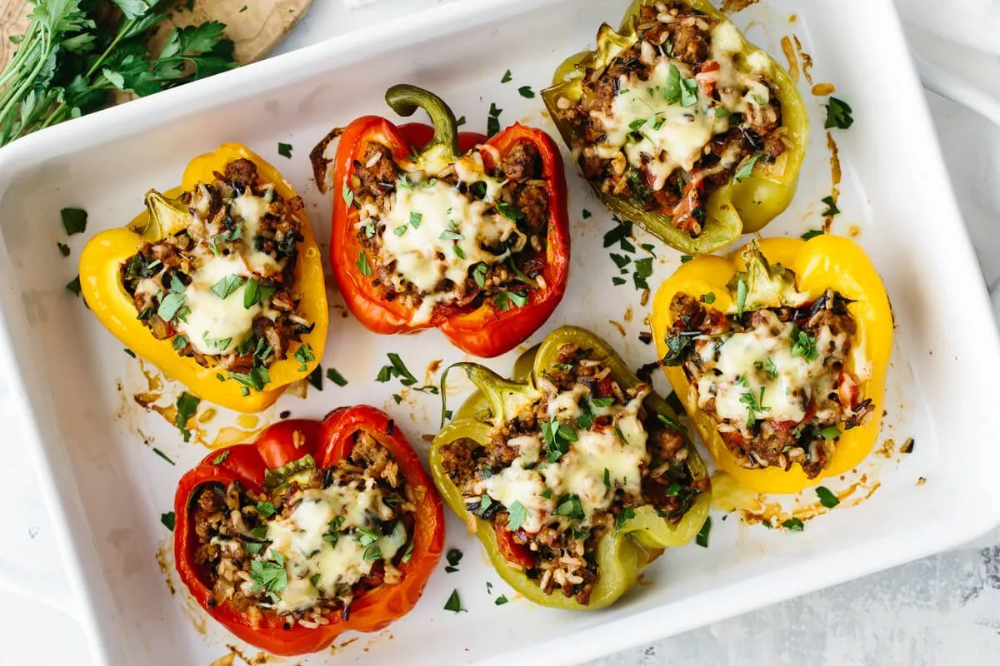

Stuffed Peppers

Description
Easy to make and full of flavor,
stuffed peppers are sure to satisfy.
Ingredients
- 1 cup cold water
- 1/2 cup uncooked long grain white rice
- 1 tablespoon vegetable oil
- 1 pound ground beef
- 6 medium green bell peppers
- 16 ounces tomato sauce, divided
- 1 tablespoon Worcestershire sauce
- 1/4 tablespoon garlic powder
- 1/4 tablespoon onion powder
- salt and ground black pepper to taste
- 1 teaspoon italian seasoning